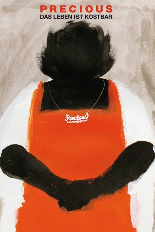
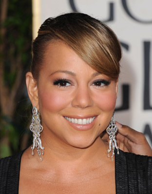
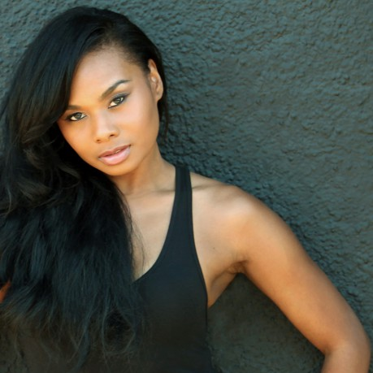
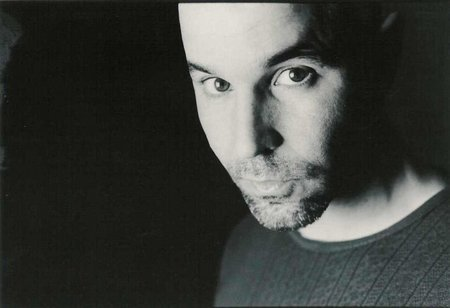
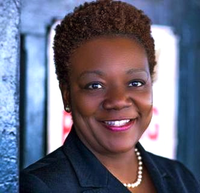

#1704 Precious - Das Leben ist kostbar
Alternativ: Precious
Auszeichnungen: 2 Oscars gewonnen für 4 Oscars nominiert 1 GoldenGlobes gewonnen 1 BAFTA-Awards gewonnen
 
 IMDB-Wertung: 7.3 / 10
IMDB-Wertung: 7.3 / 10  Metascore: 79
Metascore: 79 
Claireece ‘Precious’ Jones ist sechzehn und weit entfernt davon, ein schönes Leben zu führen. Ihre Mutter misshandelt sie, der Vater hat sie zum zweiten Mal geschwängert, sie ist schwer übergewichtig und kann nicht lesen oder schreiben. Doch eines Tages bekommt sie die Chance, aus ihrem tristen Alltag auszubrechen. Auf einer alternativen Schule kann sie ihren Abschluss nachholen, erlebt das erste Mal, wie es ist, von anderen respektiert und geliebt zu werden und versucht, sich zu wehren. Precious kämpft dafür, ihr selbst Leben in die Hand zu nehmen und von ihren grausamen Eltern zu lösen. Dieser Prozess wird ihr nicht leicht gemacht, doch so schnell gibt sich die junge Frau nicht geschlagen.
Jahr: 2009
Dauer: 110 Minuten
FSK: 12
Land: USA Studio: LionsgateTonspuren: DTS - ,
Untertitel: Deutsch,
Auflösung: 1080p (1920x1040) Größe: 10342 MB
Genre: Drama
Regisseur: Lee Daniels
Drehbuch: Geoffrey Fletcher, Sapphire
Soundtrack: Mario Grigorov
Darsteller:
 Gabourey Sidibe als Precious
Gabourey Sidibe als Precious- Mo'Nique als Mary
 Paula Patton als Ms. Rain
Paula Patton als Ms. Rain-  Mariah Carey als Ms. Weiss
 Sherri Shepherd als Cornrows
Sherri Shepherd als Cornrows Lenny Kravitz als Nurse John
Lenny Kravitz als Nurse John- Stephanie Andujar als Rita
-  Chyna Layne als Rhonda
- Amina Robinson als Jermaine
- Xosha Roquemore als Joann
 Angelic Zambrana als Consuelo
Angelic Zambrana als Consuelo Nealla Gordon als Mrs. Lichtenstein
Nealla Gordon als Mrs. Lichtenstein- Grace Hightower als Socialworker
- Kimberly Russell als Katherine
 Bill Sage als Mr. Wicher
Bill Sage als Mr. Wicher- Abigail Savage als Bunny
- Sapphire als Day Care Woman
-  Chazz Menendez als Man #1 Exits Elevator, St
- Roy T. Anderson als Man #2 Exits Elevator, St
- Erica Watson als Sheila
- Dick Clark als Himself , archive footage, uncredited
- Patty Duke als Herself , archive footage, uncredited
- Jackée Harry als Sandra Clark , uncredited
 Michael Jeremiah als Vagrant , uncredited
Michael Jeremiah als Vagrant , uncredited Martin Luther King als Himself , archive footage, uncredited
Martin Luther King als Himself , archive footage, uncredited- Tristan Laurence als David , uncredited
- Deborah Lohse als Lady #1 , uncredited
-  Lorna Pruce als HIV Social Worker , uncredited
- John Reese als Chior Boy , uncredited
- Rose Sias als Ferocious Woman , uncredited
- Kisa Willis als Incest Survivor , uncredited
- Dolores Winn als Homeless Woman , uncredited
- DeWanda Wise als Miriam , uncredited
- Aunt Dot als Toosie
- Barret Helms als Tom Cruise
- Susan Taylor als Fairy Godmother
- Kendall Toombs als Abdul, New Born
- Alexander Toombs als Abdul, New Born
- Cory Davis als Abdul, 9 Months
- Rochelle McNaughton als AIDS Clerk
- Roy Anthony Tarell Harvey als Boy #1
- Rodney 'Bear' Jackson als Carl
- Linda Watson als Female Clerk
- Emani Reid als Girl #1
- Dashawn Robinson als Girl #2
- Ashley Livingston als Girl with Jermaine
- Maurizio Arseni als Italian Language Instructor
- Mugga als KFC Cashier
- Quisha Powell als Mongo
- Vivien Eng als Nurse
Datei: X:\2009(N-Z)\Precious - Das Leben ist kostbar (2009, FSK12, 1920x1040).mkv seit 06.08.2015
Festplatte: HD 2009(G-Z)-2010(A-F)
 Es gibt insgesamt 99 Filme in der Gruppe '2009(N-Z)'
Es gibt insgesamt 99 Filme in der Gruppe '2009(N-Z)'